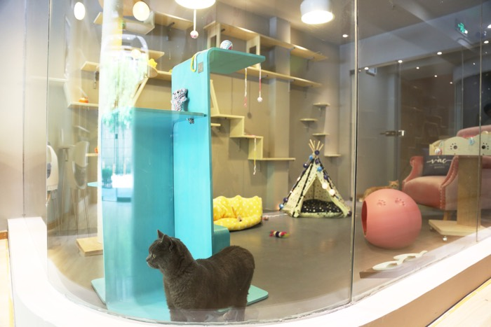
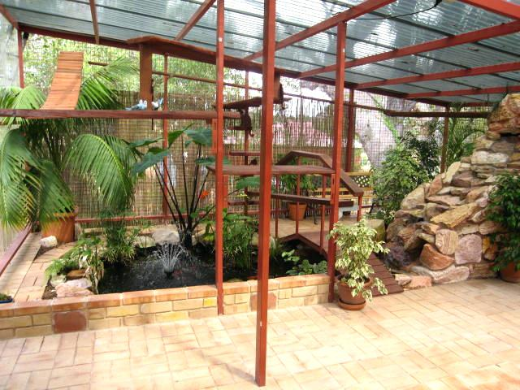

| Hotel e creche cães sociáveis | XXXXXXXX | Hotel e creche cães não sociáveis | XXXXXXXX | Natação | XXXXXXXX | Pet Spa |
"Os felinos não gostam de sair de seus ambientes, mas infelizmente às vezes não temos opção e preciamos deixá-los em algum lugar. E foi pensando nisso que a Toki de Carinho® criou espaços individuais que favorecem a ambientação e reduzem o estresse de seu gatinho.
Os quartinhos são equipados com tocas, caixas de areia, escaladores, caminhas e brinquedos, além de possuírem paredes de vidro para completa vizualização dos monitores.
O hotelzinho ainda conta com um espaço externo a ser utilizado revesadamente pelos hóspedes."
|
 Quartinho |
 Área Externa |
| OPÇÕES | HORÁRIOS DE ENTRADA E SAÍDA | VALOR DIÁRIA |
| HOTEL | Horário de Entrada: | R$ 70,00 |
| Segunda a domingo 24h | ||
| Horário de Saída: | ||
| Segunda a domingo 24h |